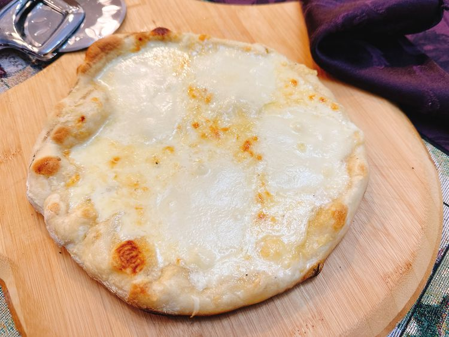

Pizza

Description
There will be places selling pizza in almost every major city in the world. Though this pizza is very simple and just has a really good cheese melted on it
It is a little parmesan and a lot of mozzarella
Ingredients
- 1 tablespoon of butter
- 1 clove of minced garlic
- 1/3 cup of heavy cream
- 1 cup of grated parmesan cheese
- 1 pound of prepared pizza dough
- 8 slices fresh mozzarella cheese
Steps
- Melt the butter in saucepan over medium high heat. Add garlic and cook for about 30 seconds, then stir in cream. Add 2/3 cup of parmesan
cheese, stir until smooth. Let alfredo sauce cool to room temperature for about 15 minutes.
- Meanwhile, preheat a gas grill with all burners on High for 10 to 15 minutes.
- Divide pizza dough in half. Shape each portion of dough into an 8 to 10 inch disc. Reduce the flame
om half the grill burners to Low, to create areas of direct and indirect heat.
- Place dough onto the grill and close the cover. Let dough grill until bottom is barely cooked and shows char marks.
- Move pizza to indirect heat. Spoon Alfredo sauce over dough. Top the pizza with four slices of mozzarella cheese and sprinkle parmesan cheese.
- Grill until the cheese is melted.